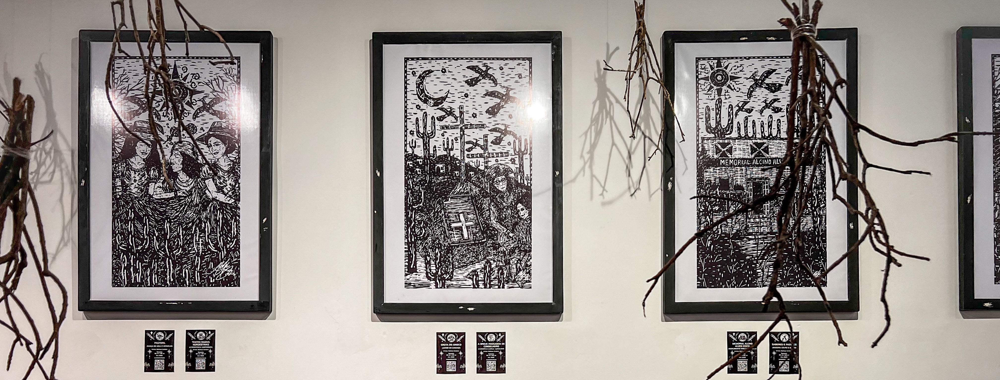

Obras feitas pelo artista visual e poeta Matheus Cordeiro
Obras feitas pelo artista visual e poeta Matheus Cordeiro
Descubra os encantos deste Estado
Sendo um estado rico em cultura e tradição, lar de artistas talentosos que expressam a essência e os encantos da região. Seja na pintura, escultura, artesanato ou outras formas de expressão, esses artistas refletem em seus trabalhos as cores, paisagens, festas populares e a identidade do povo sergipano. Suas criações não apenas embelezam, mas também contam histórias e preservam a memória cultural de um estado vibrante e cheio de inspiração.
Em cada canto da cidade, há talentos que merecem ser ouvidos, vistos e reconhecidos. Artistas locais carregam consigo histórias, emoções e culturas que enriquecem nossa comunidade. Ao apoiar quem cria perto de nós, promovemos a diversidade, incentivamos a economia criativa e construímos um cenário cultural mais justo e vibrante.